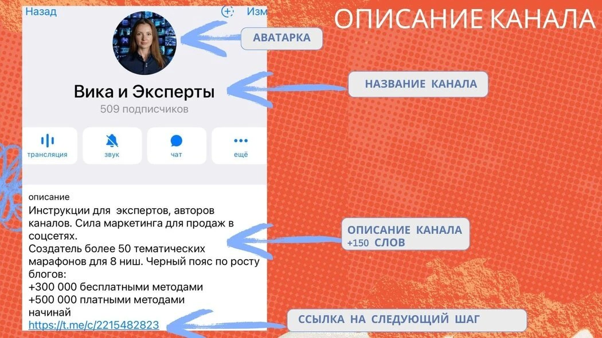
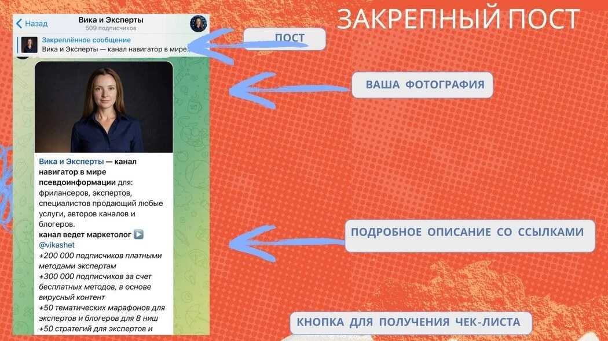

Много раз можно услышать, что самое лучшее время для старта блогинга было позавчера, вы опоздали, теперь только терпеть и плакать. Но нет. Данные рекомендации актуальны с учётом 2025 года. Итак, начнём.
01Шаг номер один: упаковка канала

Структура описания Telegram-канала психолога
Упаковка канала — сделай «витрину», которая продаёт
Что сделать:
- Название: короткое, по делу. Например: «Психолог Мария | тревога, самооценка».
- Описание: для кого, какие боли решаешь, как с тобой связаться.
- Частая история — добавление бота для сбора анонимных вопросов, например:
@LivegramBot,@Lastsupportbot. - Аватар: фото или логотип в стиле экспертного бренда.
- Закреплённый приветственный пост должен включать в себя ссылки на другие посты с миссией, кейсами, примерами проблем, которые ты решаешь.
Цель: превратить случайного подписчика в заинтересованного читателя.

Структура закреплённого поста в Telegram-канале психолога
02Структура закреплённого поста в канал
1. Заголовок
Привлекаем внимание и сразу объясняем ценность канала.
🧠 Добро пожаловать! Здесь решают тревоги, сомнения и ощущение, что «я не справляюсь».
2. Приветствие + кто я
Кратко, по-человечески и с ноткой экспертности.
Привет, меня зовут Мария. Я практикующий психолог (МГУ, гештальт, КПТ), более 5 лет помогаю взрослым людям перестать застревать в тревоге, чувстве вины и вечной прокрастинации.
3. Для кого этот канал?
Пусть человек узнает себя и поймёт: «это про меня». Используем язык боли и повседневной жизни.
Если вы часто: всё обдумываете до потери пульса; откладываете важное, хотя внутри «горит»; чувствуете, что «я недостаточно хорош/а»; запутались, устали, не знаете, куда двигаться — то вы в нужном месте.
4. Что я здесь делаю?
Объясняем, какой будет контент, чего ожидать.
Здесь я публикую короткие заметки о том, как справляться с тревогой, выгоранием и критиком в голове; делюсь историями из практики (анонимно и с разрешения); рассказываю, как проходят консультации, и отвечаю на ваши вопросы.
5. Кейсы / результаты, разборы историй
Укрепляем доверие. Показываем, что не просто пишем посты, а реально помогаем.
📌 Женщина 32 лет — год работала «на износ», не могла сказать «нет» ни клиентам, ни мужу. Через 6 сессий ввела личные границы, вышла из тревожных состояний, начала ставить свои цели.
📌 Молодой человек 24 года — панические атаки в метро, уходил с работы. Через 3 месяца самостоятельно ездит, восстановил режим, начал искать новую профессию.
6. Как со мной можно работать
Говорим прямо: «можно записаться». Без стеснения, мягко, но уверенно. Также обговариваем форматы — онлайн, индивидуально, групповые мероприятия.
🗓 Я веду индивидуальные консультации онлайн/офлайн и групповые занятия — безопасная и поддерживающая среда для проработки важных тем.
7. Призыв к действию
Ненавязчиво, но конкретно просим написать.
Если вы почувствовали, что это вам откликается — напишите мне. Расскажу подробнее о формате, стоимости и подберём удобное время.
8. Контакты / ссылки
Обязательно добавляем ссылку на заявку или Telegram-чат/бот.
📩 Написать в личку: @yourusername. 📌 Подробнее об условиях: ссылка на бота или Google-форму.
9. Список полезных постов
Добавьте список полезных постов, которые есть внутри канала. Желательно сделать их кликабельными.
10. Полезный материал за подписку
Предложите забрать что-то очень полезное и дающее результат. Как правило, дают чек-лист, полезный вебинар в записи или ещё какой-то инфопродукт. Что лучше создать в вашем случае, а главное — как настроить автоматическую выдачу, разбираю в своём Telegram-канале.
Варианты примеров для психологов — в закреплённом сообщении моего канала (ссылка ниже).
Если вам понравились рекомендации выше — подпишитесь на канал, напишите комментарий, мне важно ваше мнение, спасибо.
Читайте также — в моём Telegram-блоге больше пользы
На сайте — только часть материалов. В канале выходят разборы и практика, которых здесь нет:
- Разборы чужих блогов психологов и коучей: почему нет заявок и что с этим делать
- Как работают алгоритмы Threads и как набрать первых подписчиков
- 7-дневный прогрев для психолога — путь от поста до записи на консультацию
- Промпты для ИИ-агента: вирусные Reels и посты, которые приносят заявки
- Актуальные исследования рынка — за какие инфопродукты платят в 2025–2026
Нужна помощь с упаковкой Telegram-канала и контент-системой?
Напишите мне — разберём вашу ситуацию и соберём план запуска.
Написать в Telegram →